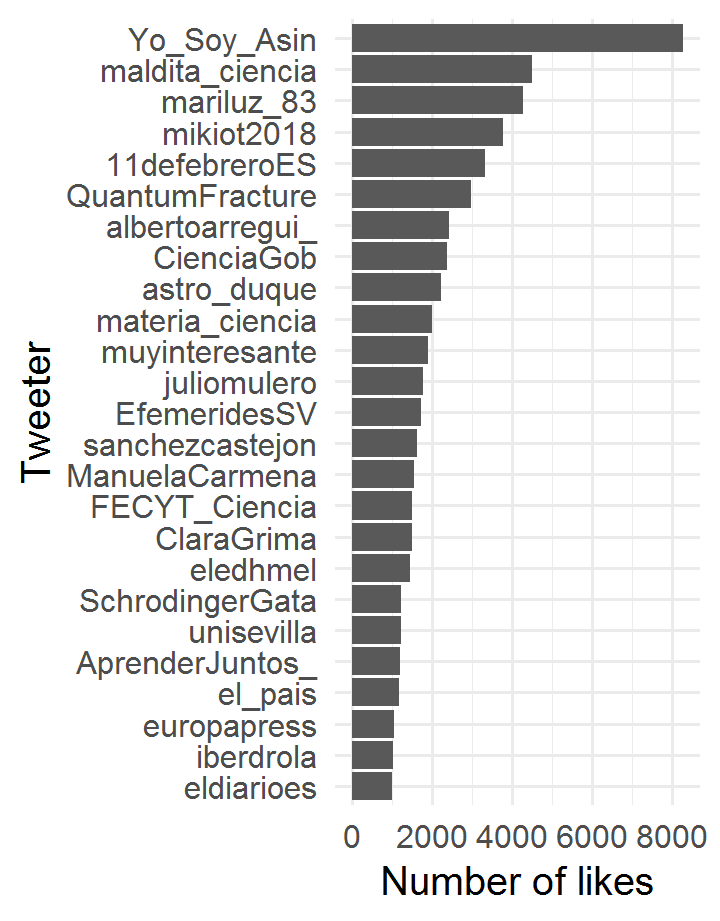
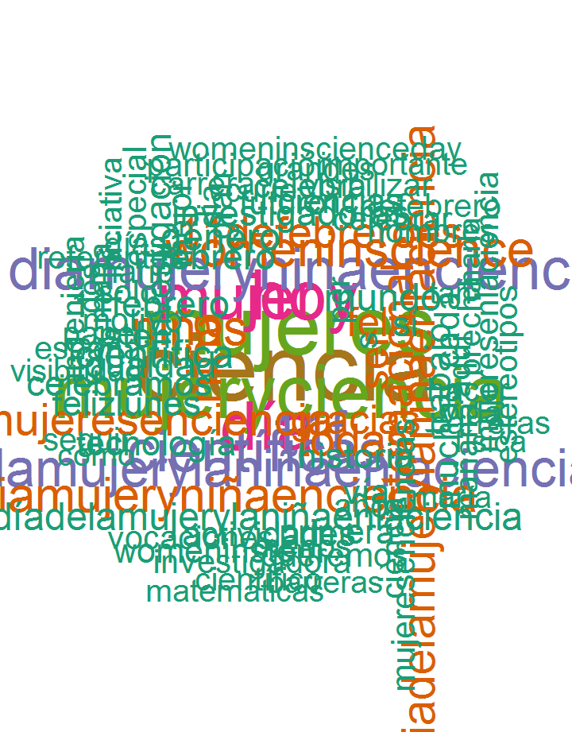
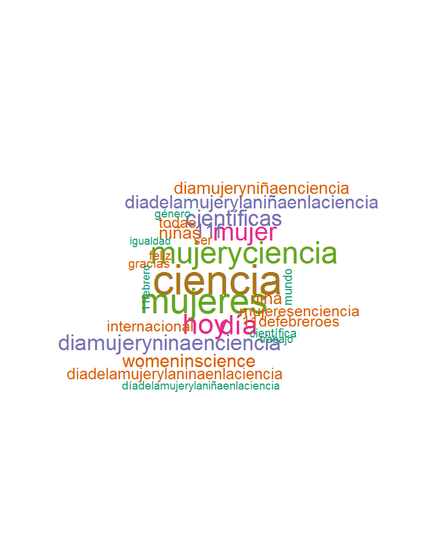
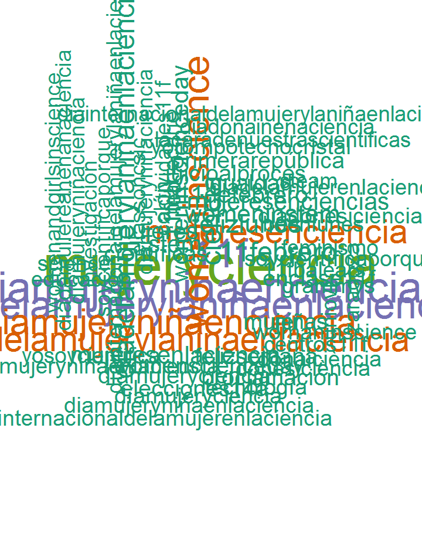
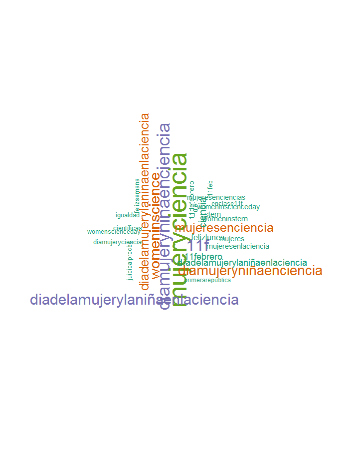
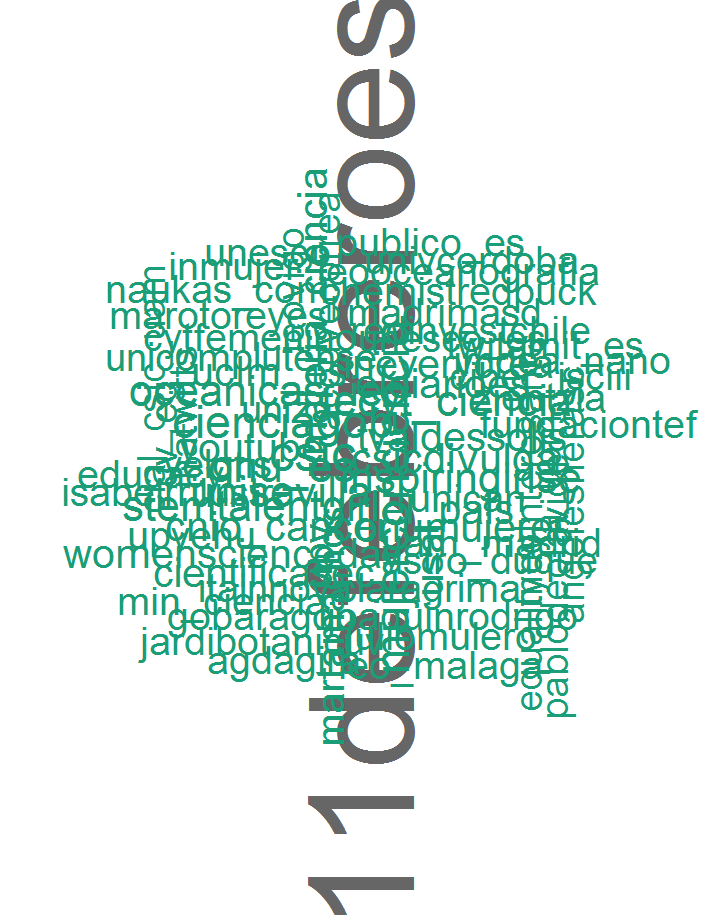
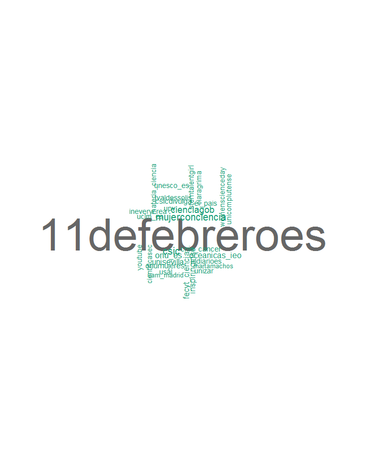
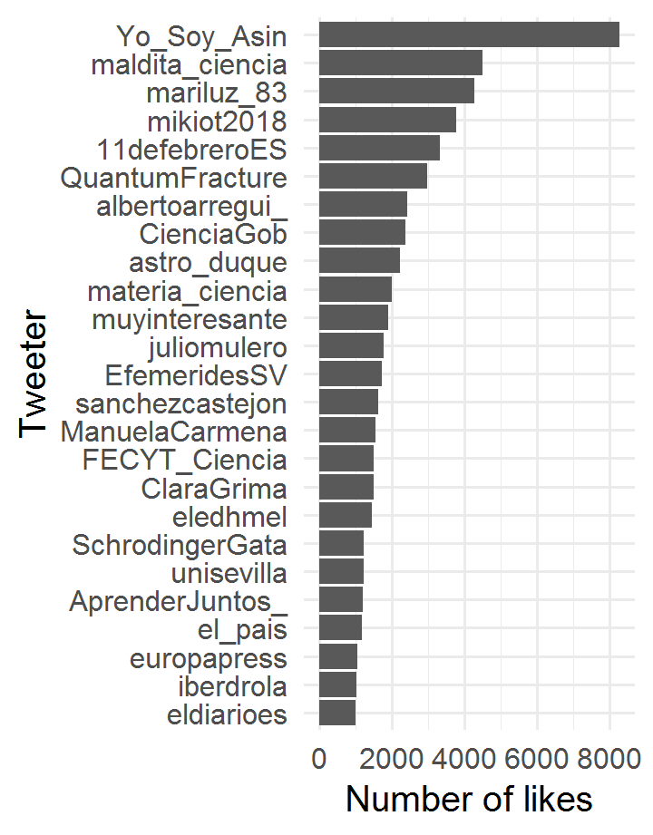
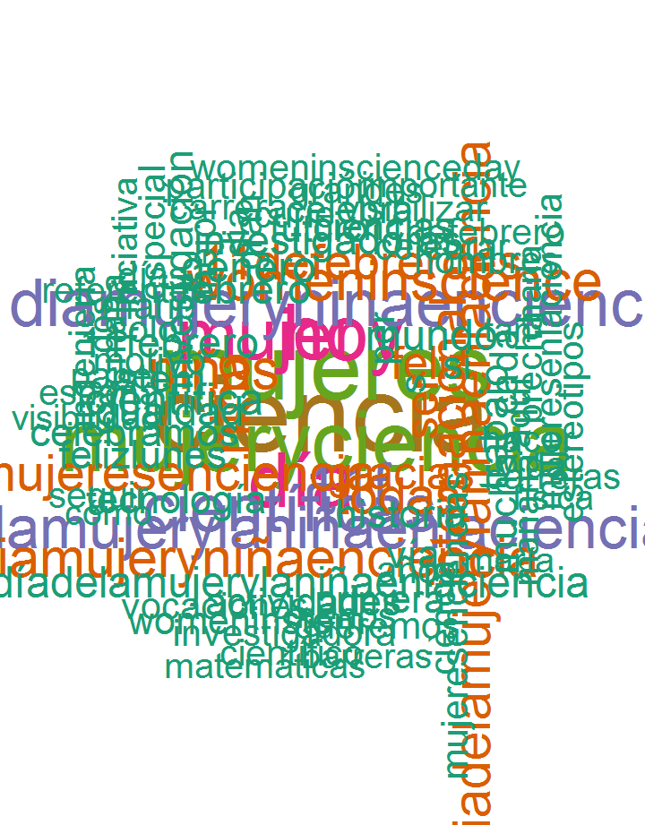
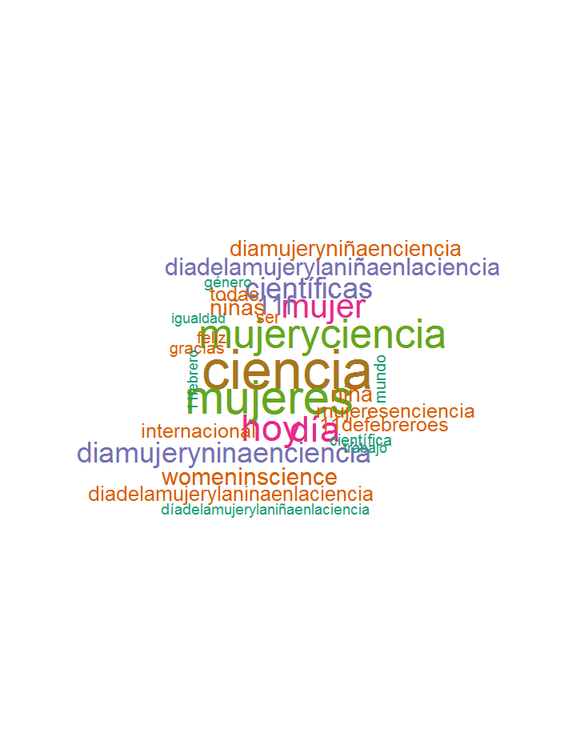
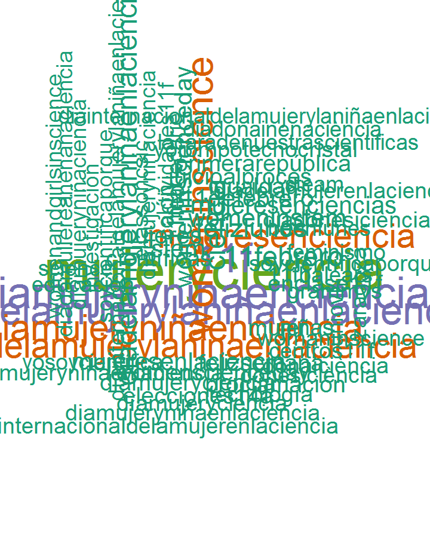
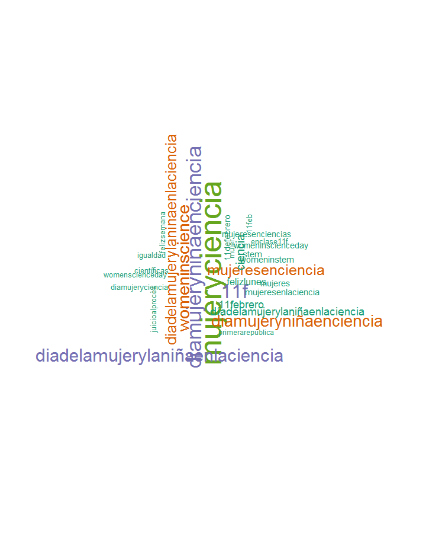
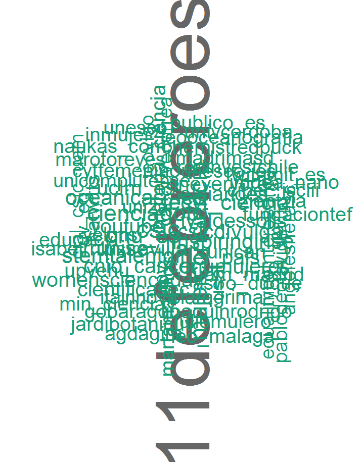
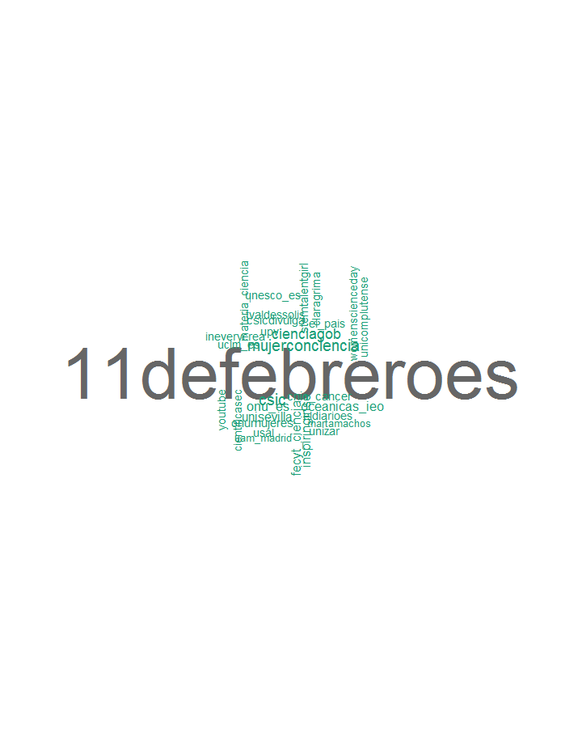
Si no queris ser como esta mujer, LEE #mujeryciencia https://t.co/oEiT3vzrlN
Si no queris ser como esta mujer, LEE #mujeryciencia https://t.co/oEiT3vzrlN
Maana voy al IES Luis Seoane de #Pontevedra a contar cosas molonas que hacemos en la @UniversidadeUSC con #bacterias (y que pertenecen a mi #tesisdelmal )
@11defebreroES conseguir despertar alguna vocacin? #11F2019 #actividades11F #damujeryniaenciencia #ComunicaCiencia https://t.co/y3oJSBGmfG
CienciaMida (@Ciencia_miuda)
*** MOST LIKED ***
Si no queris ser como esta mujer, LEE #mujeryciencia https://t.co/oEiT3vzrlN
Aqu os dejamos una tabla peridica algo particular y muy especial: la de las cientficas!
MALDITA CIENCIA (@maldita_ciencia)
De nia siempre me gustaron las matemticas, tambin la medicina. A da de hoy soy Ingeniera y tengo un mster en Biomedicina. Hija de agricultor, siempre quise mejorar las condiciones del campo, en mi caso, en los invernaderos #SoyCientificaPorque #diamujeryninaenciencia
Mari Luz
Estas son las estadsticas de genero de mi canal durante todo un ao. Cmo las mejorarais? #damujeryniaenciencia https://t.co/W9JoLAabvr
Crespo (@QuantumFracture)
Marie Curie, primera mujer en ganar un Nobel y ser catedrtica en la Universidad de Pars:
nunca he credo q por ser mujer deba merecer tratos especiales [] d creerlo estara reconociendo q soy inferior a los hombres, y yo no soy inferior a ninguno d ellos
#mujeryciencia https://t.co/70HDtrIuGa
Alberto
Un pas que apuesta por el futuro y la modernidad tiene que aprovechar todo el talento del que dispone. Las mujeres y las nias tienen que ser ms protagonistas en la ciencia espaola, ya que sin ellas no avanzaremos. #MujerYCiencia #11F https://t.co/8e5mAcFnYA
Pedro Duque (@astro_duque)
Ciencia, Innovacin y Universidades (@CienciaGob)
El talento de las mujeres lleva siglos contribuyendo a los avances cientficos que han cambiado el mundo. Es hora de visibilizarlo, de empoderar a mujeres y nias para que sean protagonistas en la ciencia. Porque sin ellas, no avanzaremos. #mujeryciencia #WomenInScience #11F2019 https://t.co/HxxHrANoTu
Pedro Snchez (@sanchezcastejon)
Hoy es el #DaMujerYNiaEnCiencia. Y el mejor homenaje es reivindicarlas, recordarlas y rescatarlas del olvido. Protagonistas de avances histricos. Mujeres como Lise Meitner, Rosalind Franklin o Jocelyn Bell. Y actualmente espaolas como Margarita Salas o Montserrat Calleja.
Manuela Carmena (@ManuelaCarmena)
Dejad de dar la murga con que hay muy pocas mujeres que se dediquen a la ciencia y creando falsos conflictos y discriminaciones. Si no lo hacen es porque no les da la gana, y en eso consiste el empoderamiento de la mujer, no?, en que cada una decida. #mujeryciencia
Carla T. (@eledhmel)
Hoy es vuestro da, a todas las mujeres que hacis un mundo mejor de la mano de la ciencia, y que adems servs de referente a todas las nias que algn da sern como vosotras. Seguimos!
Roco Vidal (@SchrodingerGata)
Hoy, Da Internacional de la Mujer y la Nia en la Ciencia, recordamos el mensaje de Jane Goodall, en @AprenderJuntos_, a las nias que quieren ser cientficas: S curiosa y comete errores, s paciente y no te rindas #DaMujeryNiaEnCiencia #11F2019 https://t.co/sYLSCiVbw4
Aprendemos Juntos (@AprenderJuntos_)
2.580 #actividades11F 140 en #centros11F y 2.119 charlas #enclase11F que llegarn a
Da Mujer y Ciencia (@11defebreroES)
La madrugada del 9 de mayo de 1945 lleg a Bletchley Park la noticia de la rendicin de Hitler.
Unos 10000 descifradores de cdigos vibraron entonces de jbilo. Ms de 6600 eran MUJERES. #EnHebrasMatemticas #DaMujerYNiaEnCiencia #11F2019 #QueCorraSuVoz
Dentro HILO
Julio Mulero (@juliomulero)
Hoy es el #DaMujerYNiaEnCiencia y me gustara recordar en especial a Ada Lovelace, matemtica y escritora britnica. Todo empez con una traduccin al ingls. Pero hizo algo ms: cre un algoritmo extraordinariamente innovador. Es considerada la primera programadora. https://t.co/qZg5AwNFkR
igo Errejn (@ierrejon)
Da Mujer y Ciencia (@11defebreroES)
Avui 100 cientfiques ompliran 100 aules de Catalunya de passi per la investigaci. La cincia necessita la mirada i el talent de les 2 meitats de la poblaci. Avui pot nixer en moltes nenes la vocaci cientfica q necessitem per un mn millor #damujeryniaenciencia
Ada Colau (@AdaColau)
Por todas las Shuri de hoy y maana. #DaMujerYNiaEnCiencia #MujerYCiencia https://t.co/Wx8azVVoRr
Marvel Espaa (@MarvelSpain)
Buenos das a casi todos y feliz #damujeryniaenciencia! M u u u u u u u u u u u u u u u u u u u u u u u u u u u u u u u u u u u u u u u u u u u u u u u u u u u u u u u u u u u u u u u u u u u u u u u u u u u u u u u u u u u u u u u u u u u u u u u u u u u u a k!
Clara Grima (@ClaraGrima)
*** MOST RETWEETED ***
Si no queris ser como esta mujer, LEE #mujeryciencia https://t.co/oEiT3vzrlN
Aqu os dejamos una tabla peridica algo particular y muy especial: la de las cientficas!
MALDITA CIENCIA (@maldita_ciencia)
Ciencia, Innovacin y Universidades (@CienciaGob)
Un pas que apuesta por el futuro y la modernidad tiene que aprovechar todo el talento del que dispone. Las mujeres y las nias tienen que ser ms protagonistas en la ciencia espaola, ya que sin ellas no avanzaremos. #MujerYCiencia #11F https://t.co/8e5mAcFnYA
Pedro Duque (@astro_duque)
Marie Curie, primera mujer en ganar un Nobel y ser catedrtica en la Universidad de Pars:
nunca he credo q por ser mujer deba merecer tratos especiales [] d creerlo estara reconociendo q soy inferior a los hombres, y yo no soy inferior a ninguno d ellos
#mujeryciencia https://t.co/70HDtrIuGa
Alberto
2.580 #actividades11F 140 en #centros11F y 2.119 charlas #enclase11F que llegarn a
Da Mujer y Ciencia (@11defebreroES)
La madrugada del 9 de mayo de 1945 lleg a Bletchley Park la noticia de la rendicin de Hitler.
Unos 10000 descifradores de cdigos vibraron entonces de jbilo. Ms de 6600 eran MUJERES. #EnHebrasMatemticas #DaMujerYNiaEnCiencia #11F2019 #QueCorraSuVoz
Dentro HILO
Julio Mulero (@juliomulero)
Hoy, Da Internacional de la Mujer y la Nia en la Ciencia, recordamos el mensaje de Jane Goodall, en @AprenderJuntos_, a las nias que quieren ser cientficas: S curiosa y comete errores, s paciente y no te rindas #DaMujeryNiaEnCiencia #11F2019 https://t.co/sYLSCiVbw4
Aprendemos Juntos (@AprenderJuntos_)
Da Mujer y Ciencia (@11defebreroES)
El talento de las mujeres lleva siglos contribuyendo a los avances cientficos que han cambiado el mundo. Es hora de visibilizarlo, de empoderar a mujeres y nias para que sean protagonistas en la ciencia. Porque sin ellas, no avanzaremos. #mujeryciencia #WomenInScience #11F2019 https://t.co/HxxHrANoTu
Pedro Snchez (@sanchezcastejon)
De nia siempre me gustaron las matemticas, tambin la medicina. A da de hoy soy Ingeniera y tengo un mster en Biomedicina. Hija de agricultor, siempre quise mejorar las condiciones del campo, en mi caso, en los invernaderos #SoyCientificaPorque #diamujeryninaenciencia
Mari Luz
Dejad de dar la murga con que hay muy pocas mujeres que se dediquen a la ciencia y creando falsos conflictos y discriminaciones. Si no lo hacen es porque no les da la gana, y en eso consiste el empoderamiento de la mujer, no?, en que cada una decida. #mujeryciencia
Carla T. (@eledhmel)
Desafiemos los estereotipos!
Impulsemos la diversidad!
Empujemos los lmites de la innovacin!
Hoy es el Da Internacional de la Mujer y la Nia en la Ciencia
UNESCO en espaol (@UNESCO_es)
Recordamos hoy a Rosalind Franklin, que muri muy joven de un cncer de ovario. Trabajaba sin proteccin con rayos X, para fotografiar molculas. Eso mismo, que pudo daar su ADN, sirvi para que otros 4 cientficos ganaran 2 premios Nobel. #mujeryciencia https://t.co/qbvkQUuw6p https://t.co/zXYLlMnVeh
Materia (@materia_ciencia)
ngela Ruiz Robles fue maestra, escritora e inventora espaola. Patent un dispositivo precursor del #LibroElectrnico, que se encuentra en el @muncyt de A Corua. #diamujeryninaenciencia https://t.co/990Q7V4LTf
FECYT_Ciencia (@FECYT_Ciencia)
Alto Comisionado Agenda 2030 (@Agenda2030Esp)
Estas son las estadsticas de genero de mi canal durante todo un ao. Cmo las mejorarais? #damujeryniaenciencia https://t.co/W9JoLAabvr
Crespo (@QuantumFracture)
Cientficas argentinas reciben menos fondos de investigacin que sus colegas varones y acceden en menor medida a los altos cargos en la carrera de investigador. #MujeresEnCiencias #DiaDeLaMujerYLaNiaEnLaCiencia https://t.co/0YftV0GBMP
Florencia Ballarino (@FlorBallarino)
Marie Curie fue la primera mujer en ganar un Nobel y la primera persona en recibir dos premios Nobel en dos especialidades.
En el #DaMujeryNiaEnCiencia, recogemos 7 citas que resumen su pensamiento https://t.co/28XRfXY0gi
-Nada en este mundo debe ser temido, slo entendido https://t.co/1fEtNm43VK
Europa Press (@europapress)
*** MOST RECENT ***
Maana voy al IES Luis Seoane de #Pontevedra a contar cosas molonas que hacemos en la @UniversidadeUSC con #bacterias (y que pertenecen a mi #tesisdelmal )
@11defebreroES conseguir despertar alguna vocacin? #11F2019 #actividades11F #damujeryniaenciencia #ComunicaCiencia https://t.co/y3oJSBGmfG
CienciaMida (@Ciencia_miuda)
Arancan las entrevistas de @eldiarioes a cientficas del #CEBASCSIC. La primera de ellas: Mabel Gil #diamujeryniaenciencia https://t.co/kKAMG0qKfS
Orin Comunicacin (@OrionComunica)
@iesneruda @11defebreroES #damujeryniaenciencia #11F2019 @BiobancoDelSSPA #IratiBadilloTolosa El Registro Andaluz de Donantes para Investigacin Biomdica (REDMI) permite a la ciudadana participar activamente en las investigaciones biomdicas.
Juanje Campos (@jjcampos14)
@EducacionJujuy Estamos en @ixdescubrir en Taller de #Robotica con chicas
SeCyT Jujuy (@SecytJ)
En la semana de la mujer y la nia en la ciencia, en los laboratoriosde Ingeniera biomdica: Este es el presente que se har futuro para romper todos los techos de cristal que quieran ponernos! @TERMeG_UC3M @Master_bio_UC3M #11F2019 #EmpowerYourFuture #DiaMujerYNiaEnLaCiencia https://t.co/1D0EIo78lS
Sara Guerrero-Aspizua (@SaraGueAsp)
Super hilo sobre el #diamujeryninaenciencia. Porque no es lo mismo twitearlo que hacerlo :D https://t.co/fYfajslrSK
David Vidal (@dvidal)
Esta noche en el Magazine de la8 vamos a hablar del Desayuno de mujeres investigadoras de la @usal y el Da Internacional de la Mujer y Nia en la Ciencia junto a la @ucciusal #DesayunoInvestigadoras #DiadelaMujerylaNiaenlaCiencia #11F2019 #SoyUSAL https://t.co/8mmMFoTJWq
Patricia Sanchez (@PatrixDQV)
#11F2019 #DiaDeLaMujerYLaNinaEnLaCiencia #WomenInScience https://t.co/z0DMRddz02
Marcos Sanchez-Elez (@mselezm)
Scientists, astronauts, doctorsThis week we celebrate the importance of a greater participation of #WOMENINSCIENCE #StemWeek
Colegio Montespio (@MontespinoEdu)
Las cientficas histricas hacen escuela en el @VivariumOVD de La Corredoria https://t.co/6l0J8USF1K Da de la Mujer y la Nia en la Ciencia en #OVDEmprende por @fundacionctic #11F2019 va @lanuevaespana https://t.co/KeyCoBu8fQ
Oviedo Emprende (@OviedoEmprende)
Fantstica la charla de @EvaUve , investigadora del @IEOVigo! Un modelo de trayectoria personal y profesional que no olvidaremos nunca en el @IESGalileo. Y nuestros referentes femeninos, ahora mucho ms cerca! #DiaDeLaMujerYLaNinaEnLaCiencia #11F2019 https://t.co/F9aORQdrDH
Cristina Bienes (@cnesnez)
Me encanta! #womeninscience #diamujeryniaenciencia #11F2019 #11F is every day :) https://t.co/ay2AhWfvSx
Gomez Cano AR (@argcPALEO)
Ayer en @iescarpetania de #yepes celebramos el #diamujeryniaenlaciencia #11F2019. Gimkana, intercambio de experiencias de laboratorio con @iesalonsodeercilla de #ocaa, Alcahuetas y alquimistas con @ciencialacarta, exposicin, taller #cianotipias. Una celebracin en toda regla! https://t.co/HS0A9pftFC
Arte y Ciencia (@proyectosayc)
Mujeres cientficas Ciencia ficcin? Ponencia con motivo de el #DaMujerYNiaEnCiencia por @letisanv para @unileon . https://t.co/8h7InPcjrk https://t.co/hY0NSX22R9
SALBIS (@GRUPOSALBIS)
#DaMujeryNiaEnCiencia #MujeresEnCiencias #MujeryCiencia #WomenInScience #11F #Prolegmenos #Journal #Magazine #Revista #Linguistica #Linguistics #Lenguaje #Language #languagestudy #UN #Linguia #Linguist https://t.co/LyRBKaFBer
Prolegmenos (@ResProlegomenos)
#torneo #matemticasrecreativas #bibliotecasescolares #becrea @ComunicApro_ #ComunicaAMLG @RedBECREA #biblioteca #becrea #secuence #domino #memory #diadelamujerenlaciencia #11f2019 https://t.co/8cBDwTOmVS
Biblioteca IES Monterroso (@bibliomonte)
Estrenamos #charlas11f va Skype! @EvaUve estuvo hablando a los alumnos del @IESGalileo esta maana de campaas oceanogrficas, muestreo en lonja y observadores a bordo, recursos pesqueros y descartes. Tambin aprovech para presentarles #Oceanicas_IEO #11F2019 https://t.co/SmL1iUATWk
IEO Vigo (@IEOVigo)
Yolanda, presentadora de @CrecerCiencia: La voz de Margaret Hamilton es de ngeles Barral (@AngelesBP), tambin conocida como mam . Muero de amoooor.
Laura Morrn (@lauramorron)
#qhacemoshoy? #mamaosa se pone la bata de #laboratorio y participa en un taller divulgativo sobre #ciencia en el #cole #recuerdosfelices #damujeryniaenciencia el #ph de las cosas https://t.co/FzHjD690EF
Mam Osa (@Blogmamaosa)
Maana finaliza la Exposicin con motivo del #11F2019 de @isabial_iis. Hoy os dejamos algunos dibujos realizados en el Aula del Pediatra del HGUA: https://t.co/QJffOnZ9TO
ISABIAL (@isabial_iis)
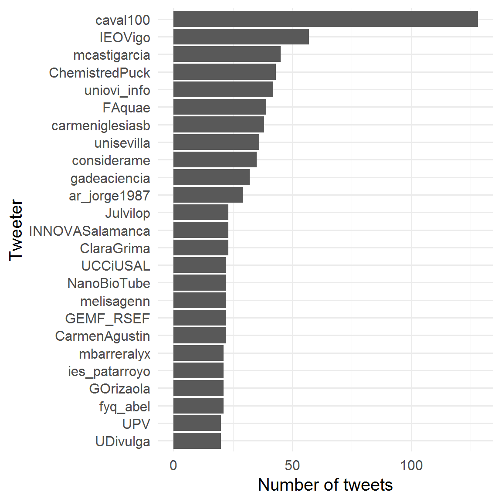
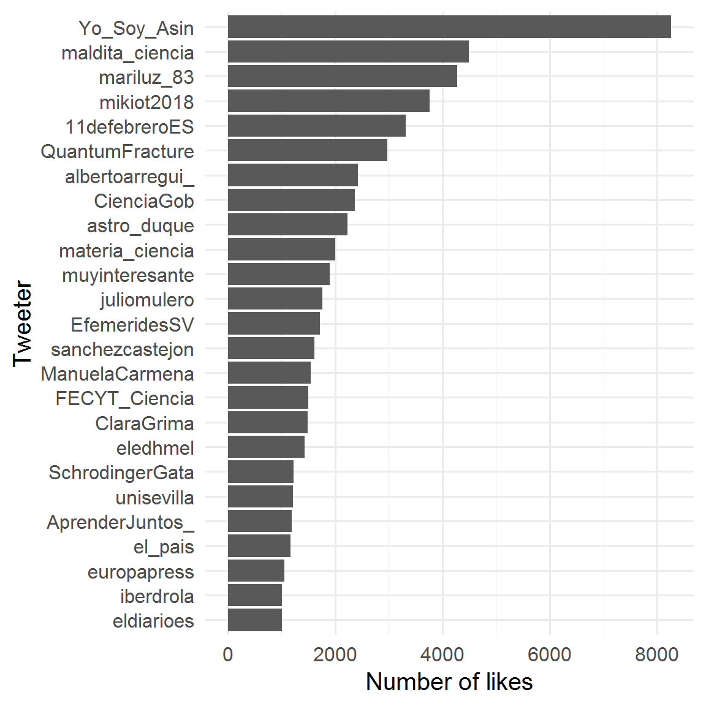
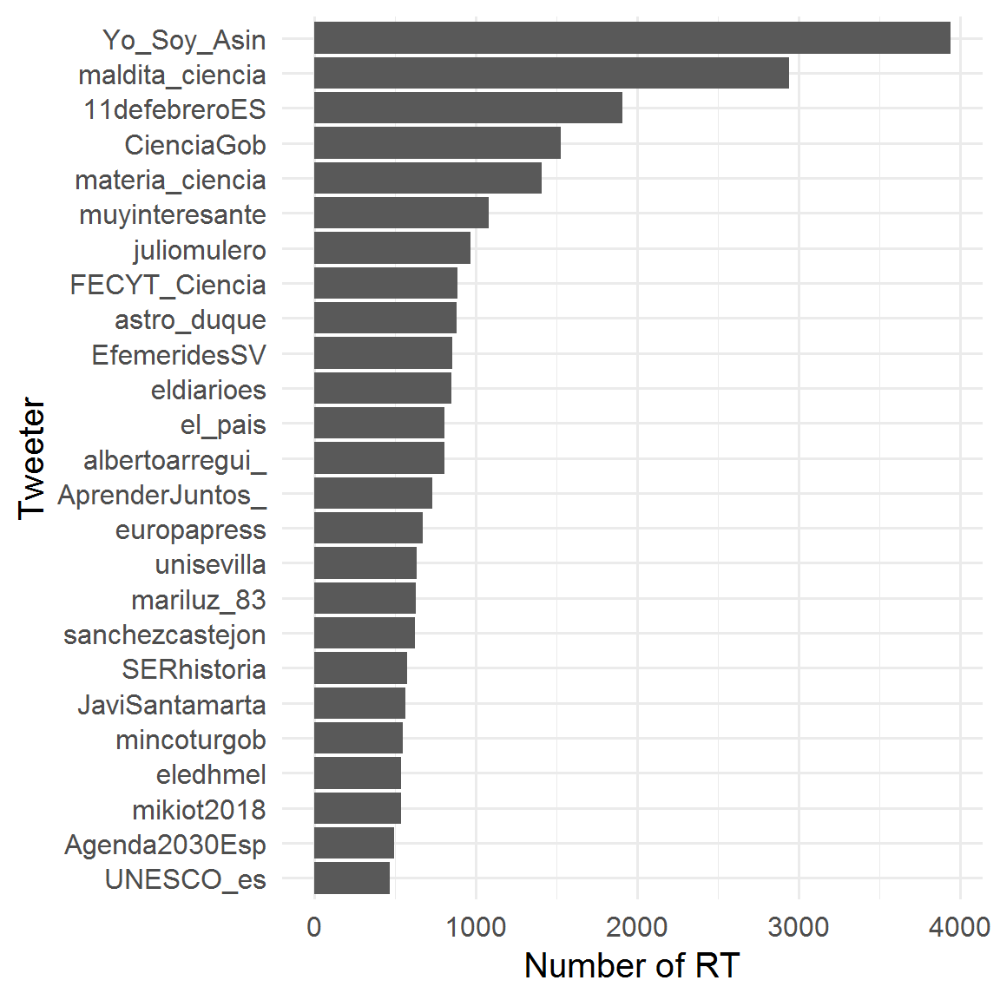
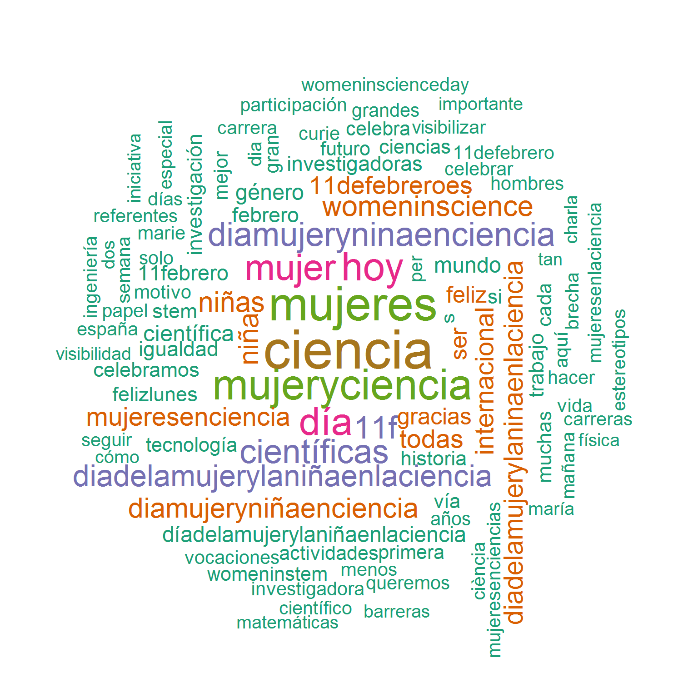
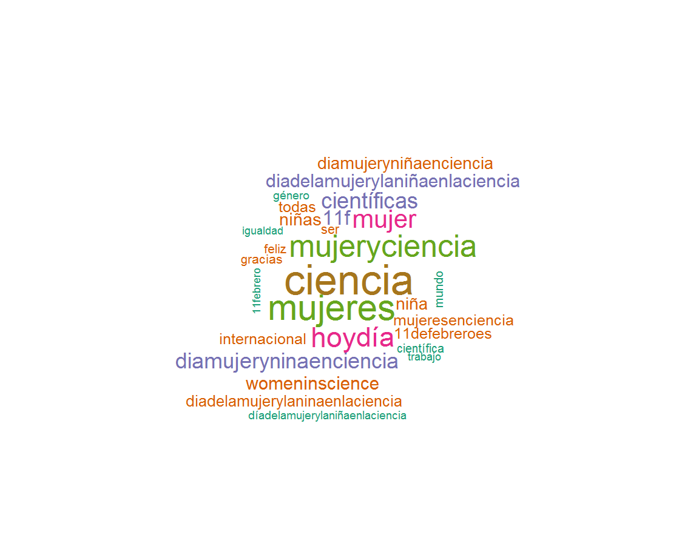
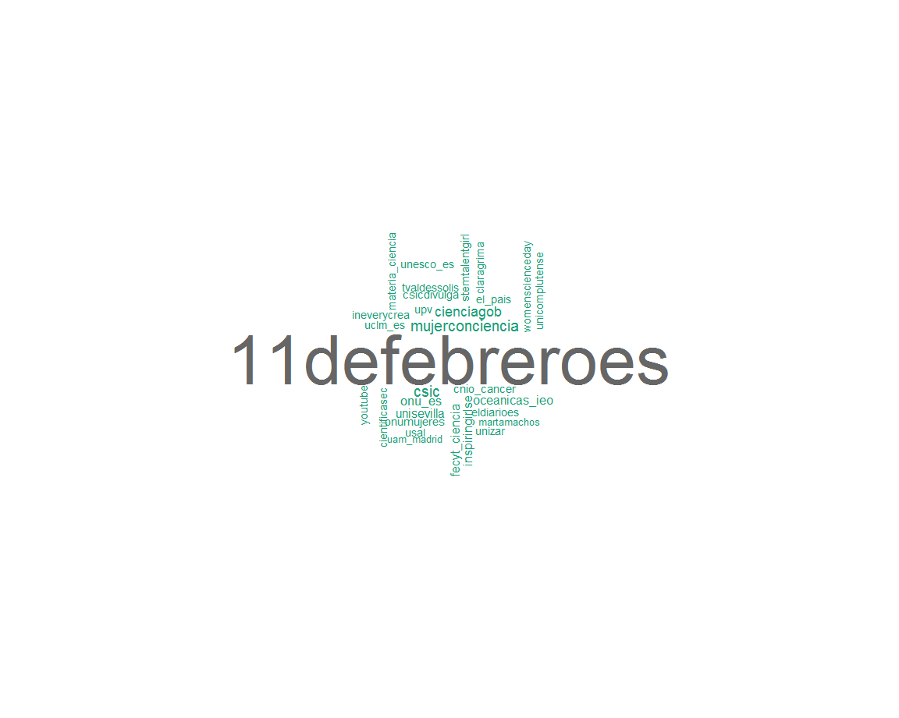